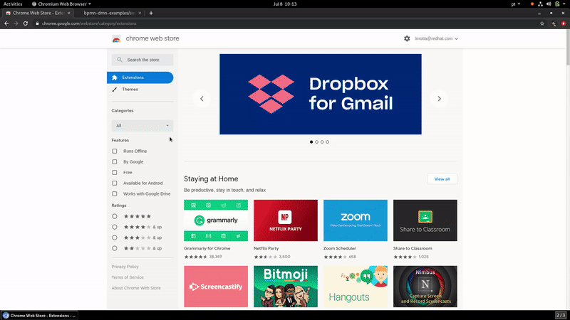

We are on the Chrome Store!
A while ago, we released our Chrome Extension as a developer extension (you can read more about it here), and now we are happy to announce that we published our BPMN, DMN & Test Scenarios Editors for GitHub extension on the Chrome Store.
Now it’s simple and easy to start using it. Here is a quick example:

After using it don’t forget to give us feedback so we can continue to improve!
Check out our VS Code extension as well! (read more about it here)
Thanks to everyone involved and keep tuned for more updates!
Author

This post was original published on here.